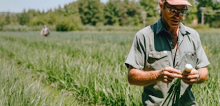
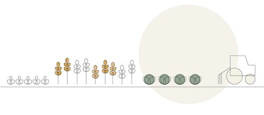
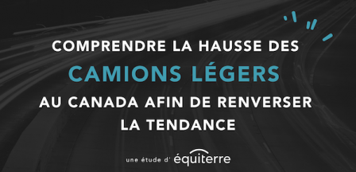

Équiterre vous invite à participer à son événement-bénéfice 2021 qui portera sur le thème « Économie circulaire : les emplois de l'avenir ».
Nouvelle pétition : exigeons des biens durables et réparables !
Un ordinateur qui rend l’âme après un an, un écran de cellulaire qui se fissure au moindre choc, une laveuse qui n’essore plus… et tout un casse-tête pour celles et ceux qui ont la ténacité de vouloir les faire réparer!

Le pouvoir des sols : une feuille de route au profit des agriculteurs et de la résilience climatique
Dans un rapport dévoilé le 1er mars 2021, Équiterre et son partenaire, la Fondation Greenbelt, démontrent comment des sols en santé peuvent permettre aux fermes canadiennes de jouer un rôle central pour affronter la crise climatique et...
Dossier complet : L’enjeu du dézonage agricole au Québec
Les terres agricoles québécoises sont des ressources rares et précieuses. Pourtant, la pression à laquelle elles sont assujetties est alarmante. Malgré la Loi sur la Protection du territoire et des activités agricoles, adoptée il y a 40 ans, nos terres...

Des outils par et pour les agriculteurs-trices!
Dans le cadre de la Semaine canadienne de l’environnement, Équiterre et Coordination services-conseil, avec le soutien financier du ministère de l’Agriculture, des Pêcheries et de l’Alimentation du Québec, lancent les Vitrines en santé et...

Comprendre la hausse des camions légers au Canada afin de renverser la tendance
Alors que le Canada est engagé dans l’Accord de Paris et s’affiche comme un leader climatique à l’international, le pays demeure l’un des plus grands pollueurs par habitant.e dans le monde et n’est pas en voie...
Rapport annuel d’Équiterre 2020
2020 nous a beaucoup appris. Elle a changé nos perspectives, ravisé nos priorités et nous a fait comprendre que, oui, des changements profonds et systémiques sont possibles. Ils sont même plus que possibles, ils sont nécessaires.